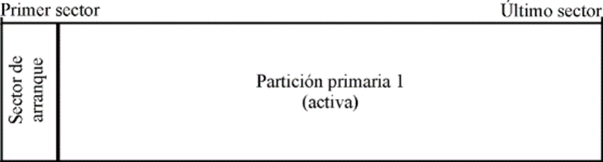
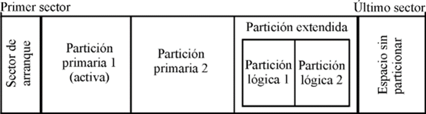

Particiones primarias y particiones lógicas.
Las particiones pueden ser de dos tipos: primarias o lógicas. Las particiones lógicas se definen dentro de una partición primaria especial denominada partición extendida.
En un disco duro sólo pueden existir 4 particiones primarias (incluida la partición extendida, si existe). Las particiones existentes deben inscribirse en una tabla de particiones situada en el primer sector de todo disco duro. Es necesario que en la tabla de particiones figure una de ellas como partición activa. La partición activa es aquella a la que el programa de inicialización (Master Boot) cede el control al arrancar. El sistema operativo de la partición activa será el que se cargue al arrancar desde el disco duro.
- Partición primaria: Son las divisiones crudas o primarias del disco, solo puede haber 4 de éstas o 3 primarias y una extendida. Depende de una tabla de particiones. Un disco físico completamente formateado consiste, en realidad, de una partición primaria que ocupa todo el espacio del disco y posee un sistema de archivos. A este tipo de particiones, prácticamente cualquier sistema operativo puede detectarlas y asignarles una unidad, siempre y cuando el sistema operativo reconozca su formato (sistema de archivos).

- Partición extendida: También conocida como partición secundaria es otro tipo de partición que actúa como una partición primaria; sirve para contener múltiples unidades lógicas en su interior. Fue ideada para romper la limitación de 4 particiones primarias en un solo disco físico. Solo puede existir una partición de este tipo por disco, y solo sirve para contener particiones lógicas. Por lo tanto, es el único tipo de partición que no soporta un sistema de archivos directamente.
- Partición lógica: Ocupa una porción de la partición extendida o la totalidad de la misma, la cual se ha formateado con un tipo específico de sistema de archivos (FAT32, NTFS, ext2, ...) y se le ha asignado una unidad, así el sistema operativo reconoce las particiones lógicas o su sistema de archivos. Puede haber un máximo de 23 particiones lógicas en una partición extendida. Linux impone un máximo de 15.
